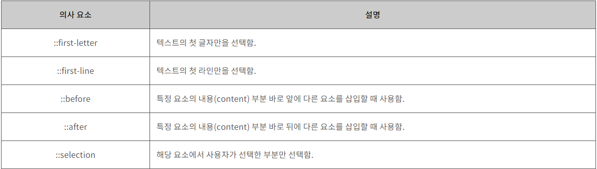

자손 선택자는 해당 요소의 하위 요소 중에서 특정 요소를 모두 선택한다.
- 사과
- 바나나
- 빵
- 얘도 ul 자손이라 변함
자손 선택자는 해당 요소의 하위 요소 중에서 특정 요소를 모두 선택한다.
자식 선택자는 해당 요소의 자식 요소 중에서 특정 요소를 모두 선택한다.
일반 동위 선택자는 해당 요소와 동위 관계에 있고 뒤에 존재하는 특정 요소를 모두 선택한다. 이 때, 동위 관계란 부모 요소가 같음을 말한다.
만약 한 요소가 같은 요소를 자식으로 같는 경우 두 요소는 동위 관계로 취급된다.(크롬기준)
인접 동위 선택자는 해당 요소와 동위 관계에 있고 바로 뒤에 존재하는 특정 요소를 모두 선택한다.
선택자:의사클래스
꼴로 사용되며 HTML 요소의 상태를 명시할 때 사용된다.
| 의사클래스 | 설명 |
|---|---|
| :link | 사용자가 아직 한 번도 해당 링크를 통해서 연결된 페이지를 방문하지 않은 상태를 모두 선택함. (기본 상태) |
| :visited | 사용자가 한 번이라도 해당 링크를 통해서 연결된 페이지를 방문한 상태를 모두 선택함. |
| :hover | 사용자의 마우스 커서가 링크 위에 올라가 있는 상태를 모두 선택함. |
| :active | 사용자가 마우스로 링크를 클릭하고 있는 상태를 모두 선택함. |
| :focus | 초점이 맞춰진 input 요소를 모두 선택함. |
| :checked | 체크된(checked) 상태의 input 요소를 모두 선택함. |
| :enabled | 사용할 수 있는 input 요소를 모두 선택함. |
| :disabled | 사용할 수 없는 input 요소를 모두 선택함. |
| :target | 현재 활성화된 target 요소를 모두 선택함. |
| :in-range | 특정 범위 내의 값을 가지는 input 요소를 모두 선택함. |
| :out-of-range | 특정 범위를 벗어나는 값을 가지는 input 요소를 모두 선택함. |
| :read-only | readonly 속성을 가지는 input 요소를 모두 선택함. |
| :read-write | readonly 속성을 가지지 않는 input 요소를 모두 선택함. |
| :required | required 속성을 가지는 input 요소를 모두 선택함. |
| :optional | required 속성을 가지지 않는 input 요소를 모두 선택함. |
| :valid | 유효한 값을 가지는 input 요소를 모두 선택함. |
| :invalid | 유효하지 않은 값을 가지는 input 요소를 모두 선택함. |
| :first-child | 모든 자식(child) 요소 중에서 첫 번째에 위치하는 자식(child) 요소를 모두 선택함. |
| :last-child | 모든 자식(child) 요소 중에서 마지막에 위치하는 자식(child) 요소를 모두 선택함. |
| :nth-child | 모든 자식(child) 요소 중에서 앞에서부터 n번째에 위치하는 자식(child) 요소를 모두 선택함. |
| :nth-last-child | 모든 자식(child) 요소 중에서 뒤에서부터 n번째에 위치하는 자식(child) 요소를 모두 선택함. |
| :first-of-type | 모든 자식(child) 요소 중에서 첫 번째로 등장하는 특정 요소를 모두 선택함. |
| :last-of-type | 모든 자식(child) 요소 중에서 마지막으로 등장하는 특정 요소를 모두 선택함. |
| :nth-of-type | 모든 자식(child) 요소 중에서 n번째로 등장하는 특정 요소를 모두 선택함. |
| :nth-last-of-type | 모든 자식(child) 요소 중에서 뒤에서부터 n번째로 등장하는 특정 요소를 모두 선택함. |
| :only-child | 자식(child) 요소를 단 하나만 가지는 모든 요소의 자식(child) 요소를 선택함. |
| :only-of-type | 자식(child) 요소를 특정 요소 단 하나만 가지는 모든 요소의 자식(child) 요소를 선택함. |
| :empty | 아무런 자식(child) 요소도 가지지 않는 요소를 모두 선택함. |
| :root | 문서의 root 요소를 선택함. |
| :not(선택자) | 모든 선택자와 함께 사용할 수 있으며, 해당 선택자를 반대로 적용함. |
| :lang(언어) | 특정 요소를 언어 설정에 따라 다르게 표현할 때에 사용함. |
선택자::의사요소이름
의 형태로 사용되고 해당 HTML 요소의 특정 부분만을 선택할 때 사용한다.
::first-letter 과 ::first-line 은 블록 타입 요소에만 사용할 수 있다.
속성 선택자를 사용하면 특정 속성이나 특정 속성값을 가지고 있는 HTML 요소를 선택할 수 있다.
어떤 요소가 여러 선택자의 대상일 때, 명시도에 따라 어느 선택자의 선언을 적용할지 결정된다. 물론 기본적으로 직접 적용은 항상 선언보다 우선시 된다.